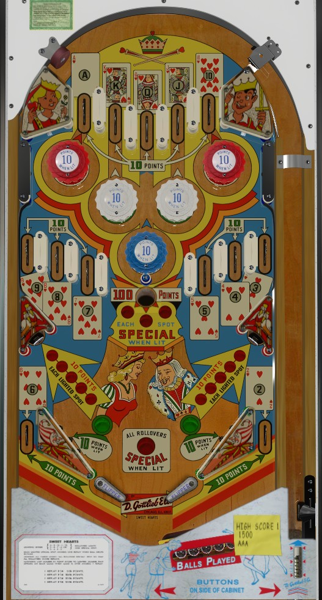

The 13 cards of a standard deck's Hearts suit are collected around the playfield: Ace-King-Queen-Jack-10 at the top lanes, 9-8-7 at the middle left lanes, 6 in the left out lane, 5-4-3 at the middle right lanes, and 2 at the right out lane. All card rollover lanes score 10 points.
Collecting Ace, King, Queen, Jack, or 10 lights the 1st, 2nd, 3rd, 4th, or 5th pop bumpers from left for 10 points instead of 1, respectively.
The lower left and lower right standup targets start the game worth 10 points. Collecting 6, 7, 8, or 9 adds 10 points to the value of the lower left standup target, up to a maximum of 50 points if all four cards are collected. Collecting the 2, 3, 4, or 5 cards adds 10 points to the value of the lower right standup target.
Collecting the 6 or the 2 lights the left or right slingshot respectively for 10 points instead of 1.
The gobble hole in the center of the game scores 100 points, plus one Special for each set of cards completed on the backglass (set 1 is Ace-King-Queen-Jack-10, set 2 is 6-7-8-9, set 3 is 2-3-4-5).
Collecting all 13 cards in a game makes it so any card rollover lane scores a Special.
There is no extra ball feature or end of ball bonus. I believe tilt ends game. There are no in lanes, no center post, and no save features in the out lanes. Special can likely only be set to score a free game, so if you are only concerned about points, focus on lighting as many pop bumpers as possible and then staying in that portion of the playfield on any subsequent ball. Once a card is collected or a feature is lit, it remains lit for the whole game, without exception.
The below picture of Sweet Hearts' playfield was taken from the VPX recreation by Loserman76.
